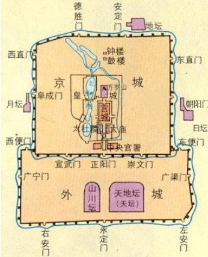

2020年北京市中考语文试题 · 现代文阅读 第13、14、15、16、17、18、19、20、21题
四、现代文阅读（共24 分）
（一）（共7分）
阅读下面材料，完成下面小题。
材料一

北京老城，即市区二环路以内（含护城河及其遗址）区域，属于“首都功能核心区”的主体部分。历经元明清三朝规划、建设和完善的北京老城建筑群，堪称古代都城建设史上的经典之作。其中最核心的是“1+4”的城市格局，正如图1所示：一条中轴线居中， ① 、 ② 、 ③ 、 ④ 四重城廓层层拱卫并延展开去。
有古建筑研究专家高度评价北京老城的格局，认为北京城“所特具的优点主要就在它那具有计划性的城市的整体”。因此，近年来首都城市总体规划结合城市建设的实际情况，始终把加强老城格局整体保护作为重要任务，即将两轴（中轴线和长安街）、四重城廓、棋盘路网、历史水系等作为整体进行保护。
材料二
位于南锣鼓巷地区的雨儿胡同是颇受游人喜爱的休闲去处。几年以前，这里和老城大多数胡同一样，私搭乱建普遍，历史风貌破坏严重。经过整治提升，雨儿胡同拆除违建，修缮加固老屋，绿化美化院落，逐步恢复了老北京胡同的风貌，这条背街小巷由此成为“北京最美街巷”。
如果说。大街是城市的“面子”，那么背街小巷就是“里子”。北京市前些年更多的是在治理“面子”，近年来则将“里子”也纳入了重点治理范围，并制定了《首都核心区背街小巷环境整治提升三年（2017-2019年）行动方案》，雨儿胡同的变化就是这一方案的实施成果之一。三年来，首都功能核心区已完成1674条“毛细血管”的改造，让背街小巷也旧貌换新颜。未来三年，背街小巷整治提升工作还将在全市范围内持续推进。计划完成3261条达标类、精治类背街小巷的精细化整治提升。
材料三
近几年，老城保护思路有了新发展，提出了可持续保护的理念。这一理念不提倡将老城变成博物馆供人参观，而强调在不破坏历史风貌的前提下改善街区人居环境，让居民们更好地生活在老城中，使老城在浓郁的生活气息中得到可持续保护。
可持续保护的要点之一，是在保护街区风貌的同时重视改善公共服务设施的功能，满足居民的需要。如前门地区近年来集中解决了街区内影响历史风貌的问题，改造地下管线，建设口袋公园，营造出“老胡同”里的“新生活”。可持续保护的要点之二，是同步改善与街区空间相辅相成的文化环境，让胡同中的老北京味道更浓。如东四地区举办的“报春”活动和“奔跑中寻找东四胡同记忆”的迷你马拉松活动，吸引居民广泛参与，让传统文化进一步融入现代生活。
如今生活在胡同里的居民，用得上暖气、空调、网络，看得见青砖、灰瓦、绿槐。这些变化说明，保护老城的观念发生了转变，从简单的“为保护而保护”转向了综合协调的可持续保护。
13. 根据图1中的信息，结合上下文，在材料一的横线处应填入的名称依次为①____、②____、③____、④_____
14. 材料三最后一段提到“保护老城的观念发生了转变”，以下与转变之后的观念完全一致的一项是（ ）
【甲】将老城变成博物馆供人参观，发挥其教育功能。
【乙】在不破坏历史风貌的前提下改善街区人居环境。
【丙】改善公共服务设施的功能，满足居民生活需要。
15. 从上述三则材料可以看出，北京老城保护的原则有：①__、②__、③__。（每空限10个字以内）
（二）（共10分）
阅读《抬头看见花》，完成下面小题。
抬头看见花
①早晨上班经过护城河岸，在花木交易区，看见大棚培育的鲜花散布在土里土气的旧物之间，甚是生动，我便买来几盆。小巧的花盆里，盛开着毛茸茸的红色小花，这种花在童年时的乡村很多见，它们叶子碧绿、花开红艳且日久不凋。乡下人管这种花叫“长寿梅”。“长寿”是说这花好养活、花期长，“梅”的来意大约是它开在冬天吧。这花并无枝干，如一墩菠菜样贴地而长，花朵的形状如同一个小绒球，与“梅”的外形其实并不相干。
②我兴冲冲地把几盆长寿梅带到办公室，每个同事的桌角放一盆。已是寒冬，小城万物萧瑟，这一簇簇鲜艳的“梅花”，在桌案上火焰一般跳跃，同事们都很高兴。王老师大赞曰：“以前是抬头看见一堆资料，现在好啊，抬头看见花！”抬头看见花，多么好的意境，当我们俯案劳作，忙到头眼昏花、筋疲力尽时，一抬头，见桌案上一盆小小的长寿梅生机盎然地开着，多么令人欢喜！这长寿梅叶子碧绿浓密，几朵花鲜润地高出叶浪，像一些小手臂在跟你打招呼；数朵花参差地插在叶子间，有环佩叮当般的美感。看到此，心情怎能不澄澈、明朗、欣悦？肩疼、颈酸、眼累、心乏等等，都被这一盆小花儿给疏解了。
③乡下人在过年时，都要贴对联和红帖，那些小红帖就像寻找窝巢的燕子，落脚在农家屋檐下不同的角落，它们都写着相同的四个字：抬头见喜。一抬头，是红艳艳的希望，看见它，就是愉悦，就是欢欣，就是希冀，就是撞进门来的春天。
④我的一位女性好友，每次出门必然化妆并衣着讲究，尤其是在冬天，她穿着色彩艳丽的大衣，裹着飘逸的丝巾，戴着考究的帽子。她笑着说，我要给生活开朵花！其实，她是被花治愈的人。几年前，她生病在家，大家都很担心她。有一天，她走到窗前，突然看见光秃着枝丫的玉兰开花了，那玉兰将一柄花枝探进她的窗框，像画一样美好。那初绽的玉兰花点燃了她，她的内心一点点融化，从那天开始，她迅速康复。她还告诉我一个细节，当看见玉兰花开的那个上午，她推开窗子，楼下一个女孩正在仰头看花，目光对视时，给了她一个真诚甜美的微笑，这笑和花都是治疗她的药引子。所以，她现在也想做一枝花，开在严寒的冬天里，把别人心里的冰融化。
⑤一日，孩子在阳台喊：“快看，‘黑森林’开花了！” “黑森林”是我家旁边的原生态植物园，里面有很多落叶植物，到冬天全都褪去叶子，赤裸着黑乎乎的粗裂枝干，风景单调得很。眼下隆冬天气，“黑森林”怎么会开花？我从阳台看过去，那些黑乎乎的树枝上，还真是闪闪烁烁地“开”着不少“花”，有的像桃花般粉红，有的像石榴花般鲜艳，也有迎春花一样金灿灿的，花朵间还有些绿色叶子，看起来春光灿烂。我忍不住好奇，就去看个究竟。远远见一个老人手里拿着花往树枝上绑。见我看她，便笑着解释：攒下些鲜花、礼品盒包装纸，都那么新、那么鲜艳，不如做成花儿，叫它们再开一次。让我惊异的是，这个老人竟然是植物园大门口卫生间的看护人。她和老伴一起来我们小城打工，就住在卫生间旁边的小储物间里。卫生间周围都被她栽满了花，娇艳的凤仙花和高大的蜀葵、美人蕉开得春光流泻，惹人注目。我曾看到在小储物间里，她那穿环卫工作服的老伴坐在马扎上喝酒、吃饺子，两个老人都幸福满满的样子。我帮着老人往树枝上绑花儿时想，这些包装纸大约是她老伴捡来的吧，但是它们做出的花儿却一样的光彩绚丽。
⑥再从阳台上眺望，那一树树花让我心情莞尔、无比温暖，那个往树上绑花的老人似乎也成了一朵花，她和那些花儿像一轮月亮，照着我和更多人的梦。
⑦我还曾走进一个孤寡老人的家，他的腿病使他行走艰难，病发时下不了炕、出不了屋子。他的屋子狭暗，但窗台上摆满各种各样的木花。他将树枝削掉外皮，削出一层层木屑，木屑不落，卷起来像层层花瓣。他拿颜料将那些“花儿”染成各种鲜艳的颜色，然后“栽”在窗台那一块长满孔洞的皱麻石上。坐在木花旁边的他乐呵呵的，不见困顿之情。现在想来，那些生动的色彩是他为自己制造的阳光和火焰，他用来温暖、照耀自己。当他被病痛折磨的时候，他从苦闷里抬起头的刹那，看见的是鲜艳的花，是人人期待的春天。
⑧抬头看见花！这非常值得期待。在喧嚣忙碌的生活里，累了、乏了、倦了的时候，猛然一抬头，与一树花对视，这是多大的幸福啊！但四时有序，花开有时，那一束花开常常被辽阔的苍茫代替，被嘈杂的市声淹没。在没有花开的时节，乐观的人们从不等待，他们用自己的双手和智慧，用纯洁而向美的心灵去创造，让寒冬开花，让枯枝开花，让石头开花……
（取材于张金凤 同名文章）
同名文章）
16. 文章写了很多“花”这些“花”既指自然界鲜花，如长寿梅、玉兰花；也指①____________，如纸花、木花；还指②_____________，如女性好友、微笑的小女孩、进城务工的夫妇。
17. 文中动词的运用生动传神，请从三处画线句加点的动词中任选一个，结合上下文，简要分析其妙处。
18. 纸花、木花不是自然界中真实的花，文章为什么要写这些花？请结合最后一段的相关内容谈谈你的理解。
（三）（共7分）
阅读下面的文字，完成下面小题。
①庚子年伊始，新冠肺炎疫情突发。这是一场全人类与病毒的战争，中国人民经过艰苦卓绝的努力取得抗疫阶段性成果。这一成采的取得离不开中国制度的优势和经济科技等方面的实力，也与中国人民敢于担当的精神和服从大局的意识息息相关。
②敢于担当的精神，在疫情期间得到了充分体现。担当意味着要有强烈的社会责任感，也意味着在关键时刻能将国家、集体的利益置于个人利益之上。疫情期间，有一张广为流传的照片戳中了人们的泪点：钟南山院士靠在车座上闭目小憩，脸上是难以掩饰的疲惫。这是因为钟老匆忙奔赴疫区，没有时间好好休息。一位84岁的老人，不亲赴抗疫一线本无可厚非，但他首先想到的是为抗疫尽自己的力量，不顾劳累与安危，毅然决然奔赴疫区。从年事已高的院士专家，到90后、00后的年轻医护人员，他们面对疫情义无反顾，坚定前行，承受难以想象的身体和心理压力，做出了巨大牺牲。他们勇敢承担起社会责任，以对人民的赤诚和对生命的敬佑，争分夺秒，连续作战，挽救了一个又一个垂危生命，为病毒肆虐的漫漫黑夜带来了光明，守护了国家和民族生生不息的希望。
③抗疫英雄敢于担当，奋战在前线，广大民众也自觉服从大局，为抗疫取得阶段性成果做出了贡献。疫情突发正值春节假期，国家一声令下，全民响应，人们取消了春节期间的走亲访友和各种聚会，克服困难就地隔离。武汉人民、湖北人民顾全大局，顽强不屈，为阻击病毒做出巨大贡献。他们面对离汉离鄂通道关闭后交通停滞、城市“停摆”，克服了近距离接触病毒、物资紧张以及长时间隔离带来的国难，服从大局，咬紧牙关，团结坚守。在这场伟大的抗疫战争中，英雄的武汉人民、湖北人民将载入史册，为人们所铭记。
④医务工作者等抗疫一线的广大勇士逆行出征，不惧牺牲，用血肉之躯构筑起阻击病毒的铜铁长城：他们是栋梁，体现了敢于担当的精神。广大民众在疫情期间以国家利益为重，响应国家号召，约束自我，居家隔离；他们是基石，体现了服从大局的意识。有栋梁，大厦将倾；没有基石，栋梁也将失去支撑。由此可见，____________，国家兴亡，匹夫有责。14亿中国人民都是抗击疫情的伟大战士。
19. 根据你对全文论述内容的理解，结合上下文，在第④段横线处补写一句话。
20. 阅读全文，判断下列说法，正确的一项是（ ）
【甲】首段提出中心论点：在中国人民艰苦卓绝的努力下，中国抗击新冠肺炎疫情取得阶段性成果。
【乙】第②段列举钟南山院士和年轻的医护人员勇赴疫区的事例，意在证明有担当精神的人不分年龄大小。
【丙】第③段由之前的论证过渡到论述广大民众服从大局的意识，并用全国人民、武汉人民、湖北人民的事例来论证。
21. 下面是有关抗疫的材料。请你结合上面的文字，简要说明材料体现了中国人民怎样的精神。
材料：
所有好的做法如果想要奏效，必须要有公众的集体意愿。正因如此，中国有能力通过传统公共卫生干预方法应对一种新型的未知病毒。
——布鲁斯·艾尔沃德（世界卫生组织总干事高级顾问）
注：①【传统公共卫生干预】用提倡戴口罩、限制大众集会等手段来保障人民大众健康。